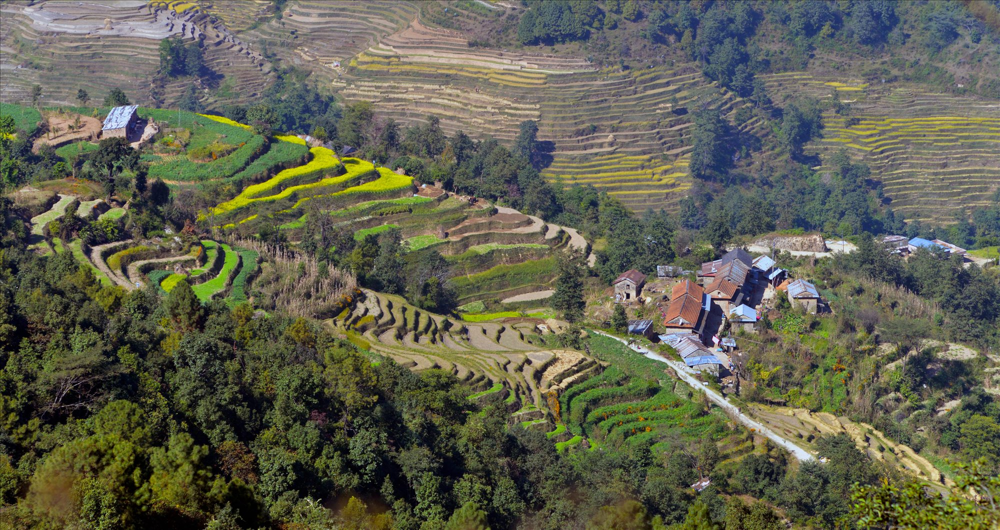
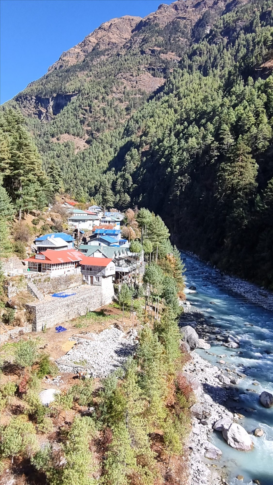

Turning ideas into impact.
Our work is focused on people, opportunity, and community. We aim to support initiatives that create meaningful improvements in everyday life and contribute toward a stronger future.

Where we make a difference.
We believe social development has many dimensions. Education can create opportunity, healthcare can protect families, community development can create resilience, and social support can help people move forward with dignity.

Education for Children
Education is one of the strongest foundations for a better future. We believe children should have the opportunity to learn, develop their abilities, and imagine a future beyond the circumstances around them.
Our focus includes encouraging access to learning, educational support, learning environments, and opportunities that help young people grow with confidence.
- Supporting educational opportunities
- Encouraging children's learning
- Promoting access to educational resources

Care for the Elderly
Every generation deserves dignity and care. We believe elderly people should be respected, supported, and included within their communities.
Our work seeks to encourage compassion and community responsibility toward older people, particularly those who may be vulnerable or isolated.
- Promoting dignity and respect
- Encouraging community support
- Supporting vulnerable individuals

Community Development
Strong communities are built when people work together. We support the idea of communities becoming more connected, responsible, resilient, and capable of creating solutions together.
Community development is about more than infrastructure. It is about people, cooperation, awareness, participation, and creating opportunities for everyone.
- Encouraging community participation
- Supporting local initiatives
- Building awareness and cooperation

Health & Wellbeing
Health and wellbeing are essential to a community's quality of life. We believe people should have access to awareness, support, and opportunities that contribute to healthier lives.
We aim to encourage initiatives that promote health awareness, wellbeing, prevention, and support for individuals and families.
- Promoting health awareness
- Supporting community wellbeing
- Encouraging healthier communities
Supporting People
Sometimes meaningful change begins with simply being there for someone. Social support is about helping people feel seen, valued, and connected to their community.
We believe support should be thoughtful and respectful, with a focus on dignity and creating opportunities for people to move forward.
- Supporting vulnerable communities
- Encouraging social responsibility
- Creating connections and opportunities
Good work becomes greater together.
Whether through your time, ideas, resources, or support, every contribution can help create another opportunity for someone else.
GET INVOLVED →